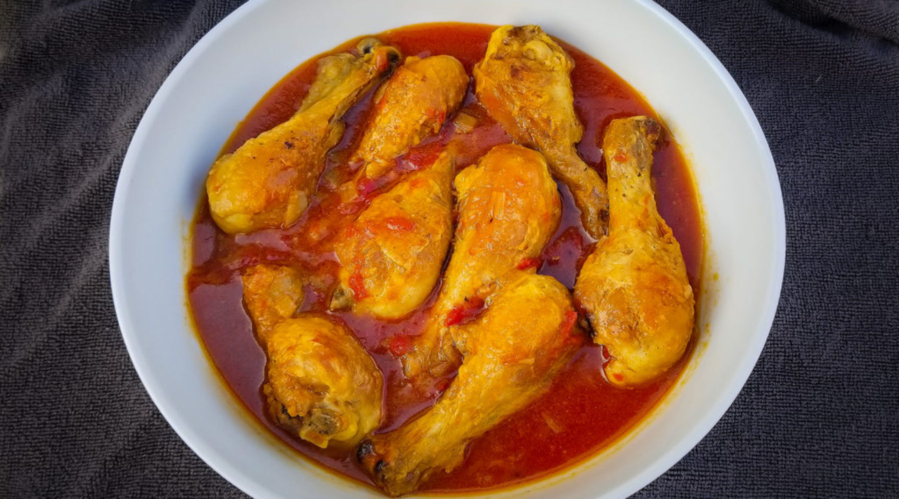

Ultra tender flesh and super crispy skin smothered in a thick savoury
sauce with vegetables. This Chicken Stew is slow cooked in the oven to
develop deep, incredible flavours. The smell that fills the house when
it’s in the oven is simply wonderful!
-
1.5 kg / 3lb bone in, skin on chicken thighs and drumsticks (6 to 8
pieces)
- Salt and pepper
- 2 onions , halved and cut into wedges
- 2 garlic cloves , minced
-
3 large carrots , cut thick end into 1.5cm / 3/5" pieces, thin end
2.5cm/1"
- 4 celery stalks , cut into 2cm / 4/5" chunks
- 1/2 cup (125 ml) white wine (or water)
- 3 tbsp (35g) flour
- 3 cups (750 ml) chicken broth , low low sodium
- 2 tbsp tomato paste
- 2 tsp Worscestershire sauce
- 3 sprigs thyme , or 1 tsp dried thyme (or other herb)
- 2 bay leaves (dried or fresh)
- 600 g / 1.2lb baby potatoes , halved (quarter large ones)
- Preheat oven to 180C/350F
-
Heat oil in a large pot over high heat. Brown chicken on both sides
until light golden, sprinkling with salt and pepper. Remove from
pot. (Do in 2 batches if pot not big enough)
-
If there's too much oil in the pot, discard some. Add onion and
garlic. Cook for 2 minutes until onion is translucent. Add carrots
and celery, cook for 1 minute
-
Add wine. Stir, scraping the bottom of the pan to dissolve the brown
bits into the liquid. Cook for 1 minute until liquid is mostly gone.
Sprinkle flour across surface, stir
-
Add broth, tomato paste, Worcestershire sauce, thyme and bay leaves.
Stir to dissolve tomato paste. Place chicken on top, keeping the
skin above the liquid level as much as you can.
- Bring to simmer then cover. Bake for 45 minutes.
-
Remove from oven, remove lid. Add potatoes, pushing them into the
liquid and rearranging chicken so they sit on top (for lovely crispy
skin)
-
Return to oven without the lid for a further 40 minutes until the
chicken skin is deep golden and super crispy, the potatoes are soft
and the sauce is thickened
- Taste sauce and adjust salt and pepper to taste
-
Serve with warm crusty bread on the side to dunk in the sauce - or
go all the way with Garlic Bread! Optional: garnish with extra fresh
thyme leaves or parsley